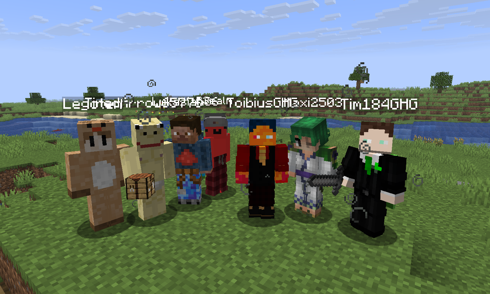

• 2.Gerichtsprozess Hussam/Dorian
Hussams Gerichtsprozesse folgten am gleichen Abend wie der von Fabi (26.6.2026). Hussam wurde ursprünglich von Dorian angezeigt, weil Hussam 14 Villiger von Dorian umgebracht hat. Die Strafe waren 280 Diamanten und 2VP. Im zweiten Abschnitts des Gerichtsprozesses wurde das von ihm begangene Griefing und Hassreden in Form eines Hankenzreuzes diskutiert. Das Hakenkreuz wurde auf dem Basegebiet von Lilly, Isa, David, Lukas errichtet. Die strafe für das Griefing liegt bei 64 Diamanten und 3VP. Die beganene Hassrede wurde mit 80 Diamanten und 5VP.

• 1.Gerichtsprozess Fränzel/Fabi
Der erste Gerichtsprozess am Server wurde auf grund einer Anklange von Fränzel umgesetzt.Der Grund für seine Anzeige war der Tod seines Pferdes, im Kampf mit Fabi. Fränzel konnte aber nicht aufkreuzen konnte, konnte sich das Gericht nur die Seite von Fabi beobachten. Das Gericht hat entschieden Fabi eine geringe Strafe von 6 Diamanten zu verabreichen. Die ursprüngliche Strafe lag bei 2VP und 30 Diamanten.

• Serverstart
Der Bee_SMP wurde für 20 Spieler am 19 Juni um 18:00 eröffnet. Beim start waren 7 spieler dabei die bis heute aktiv mitspielen.

• Serverseed
Auf der Serverkarte befindet sich in der mitte eine Spitzhackenförmige Insel die under dem Namen Spitzhackeninsel bekannt ist. Auf und neben ihr befinden sich alle Basen vom Server.